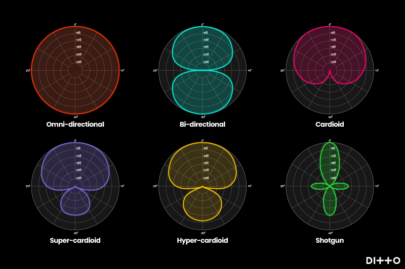
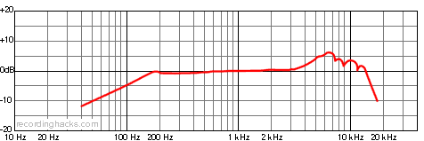
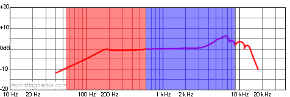
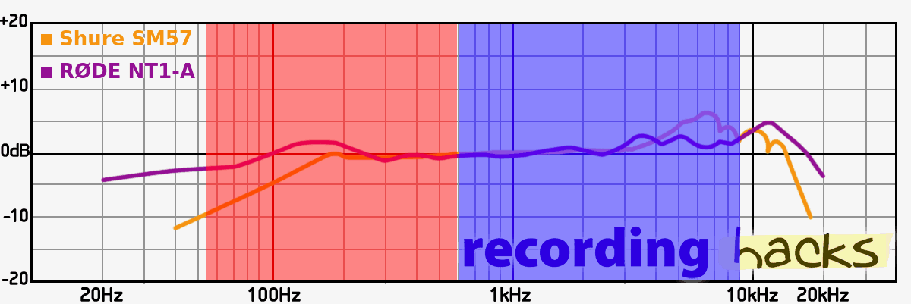

In many live electroacoustic performance situations, the bassoon will need to be amplified to match the output of the electronics. This is especially true if the performance requires processing the bassoon's sound. But even if the bassoon signal is not processed in any way, it often helps the balance of diffuse and directional sounds to amplify the bassoon alongside the electronics. Bassoonists have several options for amplification, each providing their own benefits and drawbacks. The two main options are microphones and electric bocals.
Microphones have the greatest potential for capturing the natural, acoustic sound of the bassoon. There are many different types of microphones, polar patterns, and quality of frequency response. Choosing the correct microphones and placement will help minimize feedback while also capturing the best sound of the bassoon. Feedback most commonly occurs when microphones are too close to speakers and record the output as well as the input. This leads to a feedback loop that results in a loud, constant tone until the sound is shut off or the microphone is moved. The polar pattern of the microphone can have a big effect on whether there is feedback in a sound system.
Polar patterns describe where the microphone captures sound. The most common polar patterns are cardioid, omnidirectional, and bidirectional. The cardioid pattern captures the sound in front of the microphone significantly more than behind the microphone. This is typically the polar pattern the works best to avoid feedback. Omnidirectional microphones capture sound in every direction, making them a poor choice to resolve feedback issues as they will capture the output of any speaker that is relatively close. Bidirectional microphones capture sound in front and back equally and reject sound from the sides. Similarly this is likely a poor choice because of feedback issues, or a noisy audience in a live setting. There are also some variations on these patterns, such as the hyper cardioid or super cardioid, that modify these ideas slightly. Generally speaking, a cardioid polar pattern is going to work best for live electroacoustic performances.  (image from article here)
There are different types of microphones. The most common are dynamic, condenser, and ribbon microphones. Dynamic microphones are often seen in popular music settings and are commonly used as vocal microphones, capturing different parts of drum sets, and micing guitar and bass amplifiers. They are less likely to distort with extra loud sounds and are very durable. Rachel Elliot has performed using two dynamic microphones (Shure SM57s) with good success. Ribbon microphones usually have the smoothest frequency response and sound, but they are more fragile and expensive than the other types. They also frequently have a bidirectional polar pattern that may hinder its use in a live performance environment. Condenser microphones generally have a better frequency response and capture the nuances of sound more accurately than dynamic microphones. They also require an external power source. This is often called "phantom power" or 48V, which generally comes from a mixer or audio interface. Condenser microphones come in large and small diaphragms. Large-diaphragm condenser microphones are often used when the goal is capturing the most faithful acoustic sound. Higher end microphones also allow the performer to choose between several polar patterns so the performer can choose the best pattern for any situation.
The frequency response of a microphone is often given as a graph that shows the relative strength in decibels of each frequency when it is captured. The flatter the line, the more accurate the microphone is. Often the high frequencies are where the most variation is between microphones, and the variation is what gives each microphone its characteristic sound. If the line is above 0db, it means the microphone accentuates those frequencies, and if it is below the line, those frequencies are not as strong as they were in the original sound. As an example, here is the frequency response of the Shure SM57 (from Recording Hacks a great site to know).

You can see that the low end has a steady dropoff, the middle is fairly flat, and the high end has some accentuation. The bassoon's fundamental tones range from about 55Hz to 600Hz, but the overtones of the bassoon extend to 9kHz. So when you are trying to decide between microphones, looking at that range of the frequency response may help in making the decision. In the next diagram, the fundamental bassoon frequencies are in the red section, and the overtones in the blue section.

So for most of the range of the instrument, the SM57 does a pretty good job. The low end may not be as strong, but you will still hear the notes. The dropoff point is around open F, and steadily declines down to low B flat. For a $100 dollar microphone, this isn't bad at all. Let's compare this to the RØDE NT1-A, a large-diaphragm condenser mic around $300.

You can see that the NT1-A has a better low end response than the SM57, and a different set of high frequencies that are accentuated. Generally more expensive microphones will have flatter, smoother response curves, and their own coloration in the high frequencies.
Many bassoonists find the best placement for close miking the bassoon is to place one microphone aimed toward the bell for capturing the lowest notes, and one mic aimed toward the hands. This gives the best coverage of the bassoon's sound throughout the range of the instrument.
Playing with microphones can create its own set of challenges in addition to feedback. Reliably capturing the sound requires performers to restrict moving the bassoon while playing. If the microphone placement is very close, the bassoon could hit one of the microphones, causing a loud click. If the performer moves too far away, then the sound will not be captured as well. Some performers have found success with wireless lavalier microphones that mount on the bassoon or on the performer themselves. These setups can allow more freedom of movement while possibly adding more feedback issues.
An alternative to using traditional microphones is to use an electric bocal. Electric bocals are standard bocals that have a microphone attached next to a hole that is drilled into the bocal. They are often called pickups because the concept is similar to that of an electric guitar. However, they are better described as microphones. Electric bocals have direct access to the air stream and are thus able to capture the full range of the instrument equally. Feedback is greatly reduced, since the microphone is only listening inside the bocal itself. The drawback, perhaps, is the change in tone. Electric bocals do not produce the same sound as the acoustic bassoon; rather it sounds more electronic. For some pieces, this is not an issue. For others, it may not match the electronics as well. This is especially true if the electronics conatin samples of a bassoon recorded with microphones.
Previously, Trent Jacob's Little-Jake was the best option for an electric bocal. But due to the recent passing of Trent, I don't know what the future of the Little-Jake is. Another option is the PiezoBarrel, although it seems to be less commonly used on the bassoon (likely because of the Little-Jake). A recent development that looks promising is the intraMic, manufactured by Viga Music Tools. The intraMic is a tiny microphone that slides in where the bocal attaches to the bassoon and sits right underneath the bocal. It attaches to a preamp that is strapped to the instrument—likely the long joint just above the bocal—and is designed to work with effects pedals. This avoids drilling holes in the bocal and still gives a clear, isolated signal. The sound still is not the same as that captured by an external microphone, but has the same benefits as the Little-Jake for capturing the full range of the bassoon equally while avoiding feedback. The intraMic costs over $800, but it may be a better solution than purchasing a new bocal for a Little-Jake or PiezoBarrel installation. Paul Hanson, arguably the foremost performer of music for bassoon and effects pedals, has recently switched from the Little-Jake to the intraMic.
In an article interviewing different performers published in The Double Reed, Rachel Elliot compares these two approaches. Microphones provide the most realistic sound, but have the greatest risk of feedback. Electronic bocals reduce the feedback issues, but the tone is less true to the acoustic bassoon. In my experience, it is easier to deal with an electric bocal if the piece does not lose anything by having a more electronic sound. It avoids the issues of setup, mic placement, and feedback. However, many pieces were written with the natural bassoon sound in mind. In the same article Jeff Lyman says that we "have a misplaced respect for the 'beauty of the bassoon's natural sound' and therefore think that any alteration of that basic acoustic is somehow going to distort what we do." Some performers mix the two approaches, blending the true acoustic sound from a microphone with the uniform coverage of the electric bocal. In many cases, it will be up to the performer to make the decision about which amplification system works best for the piece being performed and for the performance space.
For a brief comparison, here are some sound clips from the piece Concatenation by Rand Steiger. This first clip used a relatively cheap ribbon microphone, the MXL R144.
Next, listen to the same section that was recorded with the Little-Jake.
Definitely a different sound. However, it is worth remembering that this sound would be blended with the natural acoustic sound of the bassoon in a live performance space. Listen to the combination of the acoustic sound recorded through the ribbon microphone mixed with the electronics from the Little-Jake.
I personally find that this compromise can be worth it to simplify the setup and avoid feedback issues, but each artist will have their own opinion and concept of sound.
Cost can be a deciding factor in this decision as well. Depending on whether the performer modifies an existing bocal or buys a new one, a reliable Little-Jake setup can possibly be obtained for $250. When the intraMic is readily available it is likely to be around $800. High-quality microphones will likely be much more than this if the performer has to provide their own. A setup using two microphones could cost from $200 to over $10,000, depending on the quality of the microphones. It is possible that the performance venue can provide serviceable microphones, but a performer should have access to their own microphones for practicing purposes. Cheaper microphones for practice purposes can be found for less than $100 but likely will not have a good enough sound for performances.
©2025 by Benjamin Bradshaw
Logo ©2025 by Hannah Bradshaw